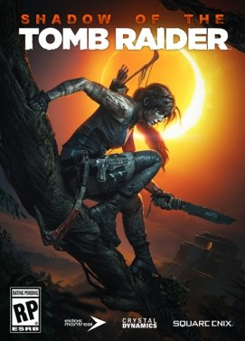

Ovo su igre u ponudi:
Shadow of the Tomb Raider
Smešten je tri godine nakon dešavanja u Rise of the Tomb Raider, priča ove igre prati našu poznatu protagonistkinju Laru Kroft dok putuje kroz tropske regione Amerike do legendarnog grada Paititi.
Boreći se sa paravojnom organizacijom Trinity trkajući se da zaustavi apokalipsu Maja koju je započela.
Assassin's Creed II

Radnja ove igre se odvija u gradu Firenca, a glavni protagonista ove igre jeste Ezio Auditore da Firenze. Eziova sećanja počinju tokom renesanse u 15. veku gde je njegova porodica zapletena u političku zaveru, a njegov otac i braća su osuđeni na smrt.
Ezio prateći poslednji savet svog oca Đovanija pronalazi odelo i oružje Assassina i beži iz grada sa svojom majkom i sestrom u bezbednu vilu svog strica Marija na selu. Mario mu pomaže u otkrivanju ljudi koji stoje iza zavere, potraga koju vodi Ezio se kreće od Firence, do San Điminjana, Forlija, Venecije i na kraju Rima.
Dok identifikuje odgovorne i sveti se za smrt svog oca i braće.
Grand Theft Auto IV
U ovoj igri protagonista je Niko Belić koji je ilegalni imigrant iz Srbije u potrazi za boljim životom u Americi, radnja se odvija u gradu Liberty City (Njujork u stvarnom životu). Priča započinje tako što Niko dolazi brodom na luku Liberty City-a u potrazi za američkim snom, spreman da započne novi i čist život.
Pridružuje se svom rođaku Romanu koji vodi taksi posao, što pomaže Niku da se privikne na novo okruženje i kulturu. Naš protagonista je prikazan kao čvrst, uporan i ciničan nakon što je preživeo dosta loših stvari u prošlosti pretprpevši zlodela rata tokom devedesetih godina na Balkanu.